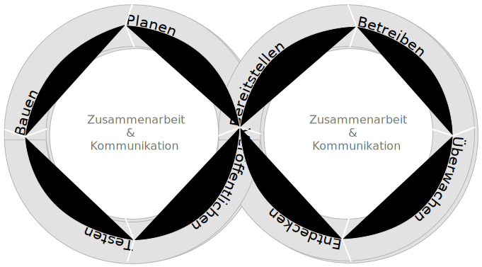

„Wir erschließen bessere Wege, Software zu entwickeln, indem wir es selbst tun und anderen dabei helfen. Durch diese Tätigkeit haben wir diese Werte zu schätzen gelernt:
Individuen und Interaktionen sind wichtiger als Prozesse und Werkzeuge
Funktionierende Software ist wichtiger als umfassende Dokumentationen
Zusammenarbeit mit dem Kunden ist wichtiger als Vertragsverhandlungen
Reagieren auf Veränderung ist wichtiger als das Befolgen eines Plans
Das heißt, obwohl wir die Werte auf der rechten Seite wichtig finden, schätzen wir die Werte auf der linken Seite höher ein.“
Agile Methoden bauen auf iterativen Ansätzen auf, die es schon viel früher gab.
Die Notwendigkeit auf Veränderungen reagieren zu können ist essentiell, da sich die Anforderungen an die Software bzw. die auftauchenden Probleme sich während der Entwicklung verändern können bzw. im Normalfall bei Projektstart noch nicht vollständig verstanden sind.
Es ist dennoch essentiell zentrale Anforderungen, die ggf. eine massive Auswirkung auf den Entwurf haben, am Anfang zu erfassen: eine neue Anforderung auch die Titel der Kunden zu erfassen ist ggf. „immer“ umsetzbar. Eine Anforderung wie zum Beispiel Mandantenfähigkeit oder Anforderungen an die Skalierbarkeit sind dagegen anders zu bewerten.
Schlüsselaspekte mit Relevanz für Softwarearchitekturen:
kleine Gruppen von Entwicklern (3-10 Personen), die über alle notwendigen Kompetenzen verfügen (technische und geschäftliche)
inkrementelle Entwicklung
Jede ausgelieferte Version der Software ist nutzbar und implementiert relevante neue Aspekte für die Nutzer.
iterative Entwicklung
Die Entwicklung erfolgt iterativ und erlaubt explizit die Wiederholung von Softwareentwicklungstätigkeiten; die einzelnen Iterationen sind strukturiert entlang einer Serie von inkrementellen Schritten mit einer fixen Länge.
Große Teams haben sich im Allgemeinen als nicht-effektiv erwiesen.
eXtreme Programming
kurze Releasezyklen
Test-driven Development (TDD)
Continuous Integration (CI)
einfaches/schlichtes Design (YAGNI, Once and only once)
SCRUM
“kurze” Sprints
Continuous Delivery (CD) (Continuous Deployment)
You ain't gonna need it
Jede Funktionalität wird nur einmal implementiert und dann wiederverwendet.
TDD erfordert modulare Softwarearchitekturen, die es erlauben einzelne Komponenten zu testen.
Kurze Releasezyklen sind notwendig, um das Verständnis der Anforderungen bzw. Problemdomäne zu verbessern.
Anforderung
Eine Bedingung oder Fähigkeit, die ein Benutzer benötigt, um ein Problem zu lösen oder ein Ziel zu erreichen.
—IEEE Standard Glossary of Software Engineering Terminology
Hauptaspekte von Domain-driven Design:
Das Ziel des Softwareentwurfs liegt darauf die Fachlichkeit und die Fachlogik der realen Welt bestmöglich zu repräsentieren.
Das Domänenmodell ist die Grundlage für den Entwurf komplexer fachlicher Zusammenhänge in der Anwendungsdomäne.
Häufig wird DDD in Kombination mit User Stories eingesetzt, um die Anforderungen zu ermitteln und zu dokumentieren.
Zur Erinnerung: User Stories beschreiben was erreicht werden soll und nicht wie. Das Ziel muss klar sein, aber der Weg nicht! (Ggf. können User Stories noch das warum adressieren.)
Die Sprache, welche in allen Bereichen der Softwareerstellung verwendet werden sollte (Fachlichkeit, Domänenmodell, Methoden, Klassen, …)
Repräsentation eines atomaren Konzeptes der DomäneEine Entität/transaktionale Einheit, die als einziges Zugriff auf die dahinterliegende, zusammengefassten Entitäten erlaubt.
Repräsentation einer Organisationsgrenze
Aggregate (aggregates)
Zusammenfassungen von Entitäten und Wertobjekten und deren Assoziationen untereinander zu einer gemeinsamen transaktionalen Einheit.
definieren genau eine Entität als einzigen Zugriff auf das gesamte Aggregat. Alle anderen Entitäten und Wertobjekte dürfen von außerhalb nicht statisch referenziert werden. Damit wird garantiert, dass alle Invarianten des Aggregats und der einzelnen Bestandteile des Aggregats sichergestellt werden können.
Kontextgrenzen (bounded context)
Beschreiben die Grenzen jedes Kontexts in vielfältiger Hinsicht wie beispielsweise Teamzuordnung, Verwendungszweck, dahinter liegende Datenbankschemata. Somit wird klar, wo ein Kontext seine Gültigkeit verliert und potentiell ein anderer Kontext seinen Platz einnimmt.
Ergänzen bestehende agile Methoden.
DevOps integriert und automatisiert die Arbeit von Softwareentwicklung (Dev) und IT-Betrieb (Ops) als Mittel zur Verbesserung und Verkürzung des Lebenszyklus der Systementwicklung.
DevOps Prinzipien:
gemeinsame Verantwortung
Automatisierung der Arbeitsabläufe
und schnelles Feedback.
Um Agilität zu erreichen, müssen wir…
Verfahrensweisen anwenden, die die notwendige Disziplin und Rückmeldung bieten
Entwurfsprinzipien anwenden, die unsere Software flexibel und wartbar machen
die Entwurfsmuster kennen, die gezeigt haben, dass sie für einen Ausgleich zwischen den Prinzipien sorgen
Agile Software Development - Principles, Patterns, and Practices; Robert C. Martin; 2003